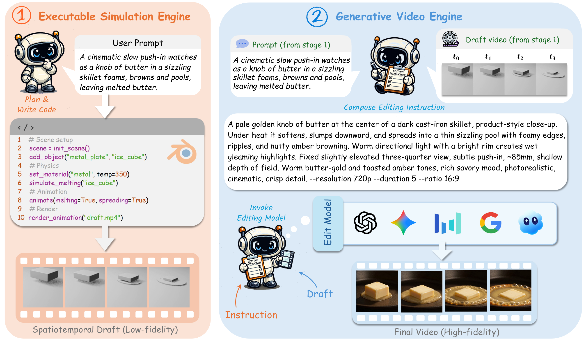
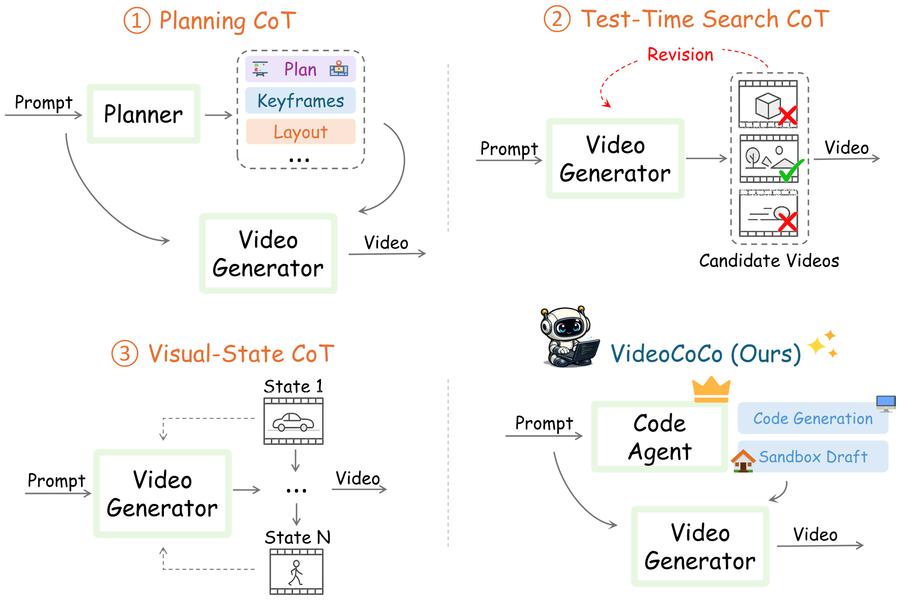

Plan and write code
Given a user prompt, a coding agent synthesizes a self-contained Blender Python program that specifies the scene, physical properties, and temporal evolution.
Research project · June 2026
VideoCoCo is an agentic dual-engine framework in which executable Blender code serves as a process-level chain of thought. Given a text prompt, a coding agent synthesizes a Blender program, a simulation engine renders a deterministic spatiotemporal draft, and a generative video engine realizes it through draft-conditioned editing.
CUHK · USTC · SCUT · HKU · NTU · PKU · SJTU · CMU · THU · HUST · MBZUAI
A text prompt specifies an event at a highly compressed semantic level, leaving the physical principles governing its evolution largely unstated. Direct text-to-video models must therefore recover a complete spatiotemporal process while synthesizing visual appearance.
VideoCoCo externalizes that process before final video generation: a coding agent writes a Blender program, the simulation engine renders a deterministic spatiotemporal draft, and a generative video engine turns the draft into a photorealistic video through draft-conditioned editing.
Given a user prompt, VideoCoCo renders a deterministic spatiotemporal draft in a sandboxed Blender environment, then realizes it as a photorealistic video through draft-conditioned editing.
Representative examples from Figure 3: VideoCoCo follows the executable spatiotemporal draft to preserve vacuum-induced collapse, buoyancy, impact shattering, and sublimation.
The white-clay draft is a deterministic, temporally dense structural scaffold: it fixes what happens and when; the editor supplies photorealistic appearance.
The executable simulation engine commits the system to a concrete realization of target dynamics before pixels are synthesized. The generative video engine then uses the draft as a structural condition and focuses on photorealistic appearance.

Given a user prompt, a coding agent synthesizes a self-contained Blender Python program that specifies the scene, physical properties, and temporal evolution.
The program runs in an isolated Blender environment, rendering a deterministic, low-fidelity draft whose frames instantiate the process from initial condition to outcome.
An instruction agent composes an appearance-focused instruction from the prompt and draft; the editor uses both to create a photorealistic video without redefining the simulated motion.

Planning, test-time search, and visual-state CoT use textual, selective, or temporally sparse intermediates. VideoCoCo renders a complete deterministic draft video that provides dense spatiotemporal guidance.
On PhyGenBench and VBench-2.0, VideoCoCo achieves the best average score while Table 3 isolates the complementary contributions of executable drafting and video-editor adaptation.
Per-category consistency scores in [0, 1]; higher is better.
| Access | Method | Mechanics | Optics | Thermal | Material | Average |
|---|---|---|---|---|---|---|
| Closed-source generators | ||||||
| Closed | Pika | 0.35 | 0.56 | 0.43 | 0.39 | 0.44 |
| Closed | Gen-3 | 0.45 | 0.57 | 0.49 | 0.51 | 0.51 |
| Closed | Kling | 0.45 | 0.58 | 0.50 | 0.40 | 0.49 |
| Open-source generators | ||||||
| Open | CogVideoX | 0.39 | 0.55 | 0.40 | 0.42 | 0.45 |
| Open | Open-Sora V1.2 | 0.43 | 0.50 | 0.44 | 0.37 | 0.44 |
| Open | LaVie | 0.30 | 0.44 | 0.38 | 0.32 | 0.36 |
| Open | Vchitect-2.0 | 0.41 | 0.56 | 0.44 | 0.37 | 0.45 |
| Open | HunyuanVideo | 0.33 | 0.39 | 0.26 | 0.30 | 0.33 |
| Open | Wan2.2-TI2V-5B | 0.55 | 0.58 | 0.53 | 0.50 | 0.54 |
| Open | Cosmos-Predict2.5 | 0.30 | 0.33 | 0.41 | 0.39 | 0.35 |
| Open | LTX-Video-2B | 0.51 | 0.58 | 0.48 | 0.45 | 0.51 |
| VideoCoCo | ||||||
| Ours | OmniWeaving | 0.48 | 0.56 | 0.43 | 0.39 | 0.48 |
| Ours | OmniWeaving + VideoCoCo | 0.56 | 0.61 | 0.51 | 0.53 | 0.56 |
Per-dimension plausibility percentages; higher is better.
| Method | Mechanics | Thermotics | Material | Average |
|---|---|---|---|---|
| Sora | 62.22% | 43.36% | 64.94% | 56.84% |
| Kling 1.6 | 65.55% | 59.46% | 68.00% | 64.34% |
| HunyuanVideo | 76.09% | 56.52% | 64.37% | 65.66% |
| CogVideoX-1.5 | 80.80% | 67.13% | 83.19% | 77.04% |
| OmniWeaving | 62.79% | 52.08% | 41.67% | 52.18% |
| OmniWeaving + VideoCoCo | 92.31% | 72.92% | 68.42% | 77.88% |
All variants share the executable draft-generation pipeline.
| Editor adaptation | Mech. | Opt. | Therm. | Mat. | Avg. |
|---|---|---|---|---|---|
| OmniWeaving | 0.48 | 0.56 | 0.43 | 0.39 | 0.48 |
| + VideoCoCo (Tune-Free) | 0.50 | 0.53 | 0.48 | 0.51 | 0.51 |
| + VideoCoCo (Full-Tune) | 0.51 | 0.61 | 0.51 | 0.49 | 0.54 |
| + VideoCoCo (LoRA-Tune) | 0.56 | 0.61 | 0.51 | 0.53 | 0.56 |
VideoCoCo is fully automatic, inspectable, and reproducible: the program, the rendered draft, and the editing instruction are explicit intermediate artifacts.
@misc{videococo2026,
title={VideoCoCo: Code-as-CoT for Physically-Consistent Video Generation via an Agentic Dual-Engine System},
author={Li, Haodong and Ren, Tianfei and Ma, Xiaoxiao and Qing, Chunmei and Fang, Zhen and He, Sipeng and Guo, Ziyu and Wu, Haoyu and Tian, Juanxi and Zou, Yihang and An, Ruichuan and Jiang, Dongzhi and Yang, Boxue and Xie, Ji and Huang, Xu and Yan, Wenhao and Zou, Jialv and Yue, Zhengrong and Luo, Yaxin and Li, Xiaotong and Wang, Yuzhu and Ye, Junyan and Zhao, Jinjing and Chen, Zehui and Chen, Lin and Yan, Renye and Zhao, Feng and Heng, Pheng-Ann},
year={2026},
howpublished={Project page: https://github.com/Frostlinx/VideoCoCo}
}